CSRF
- CSRF全拼为Cross Site Request Forgery，译为跨站请求伪造。
- CSRF指攻击者盗用了你的身份，以你的名义发送恶意请求。
- 包括：以你名义发送邮件，发消息，盗取你的账号，甚至于购买商品，虚拟货币转账......
- 造成的问题：个人隐私泄露以及财产安全。
CSRF攻击示意图
客户端访问服务器时没有同服务器做安全验证 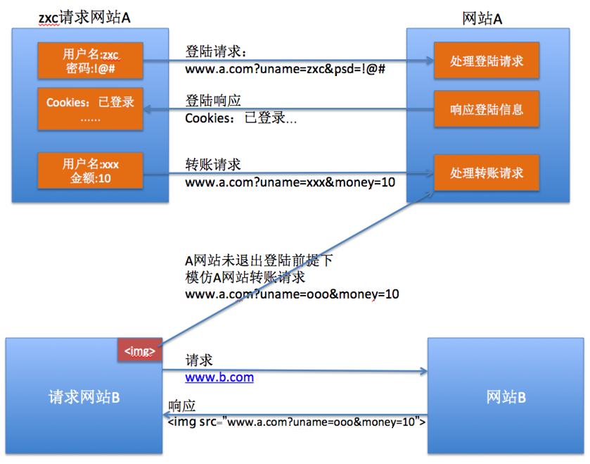
防止CSRF攻击
提示：Django默认开启了CSRF安全验证功能
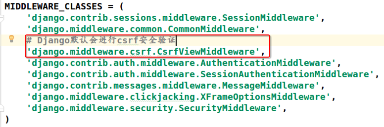
防止CSRF攻击原理代码演示
准备视图和urls
url(r'^csrf/$', views.csrf),
url(r'^csrf1/$', views.csrf1),
def csrf(request):
return render(request, 'booktest/csrf.html')
# 处理POST请求
def csrf1(request):
dict = request.POST
uname = dict.get('uname')
money = dict.get('money')
# 获取csrf验证码
token = dict.get('csrfmiddlewaretoken')
str = '%s--%s--%s' % (uname, money, token)
return HttpResponse(str)
无csrftoken的模板代码
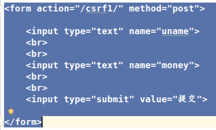
无csrftoken的网页源码
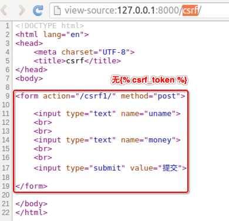
无csrftoken的表单提交
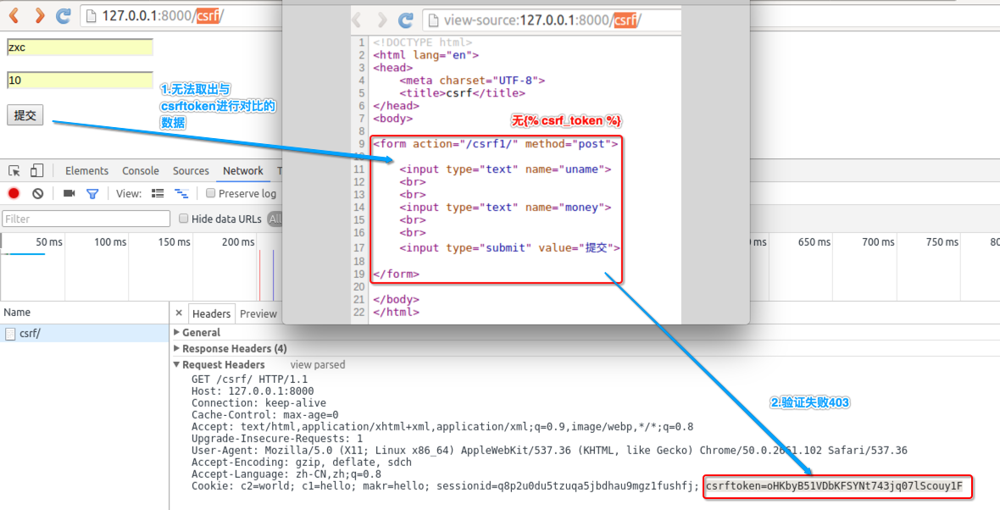
CSRF验证失败
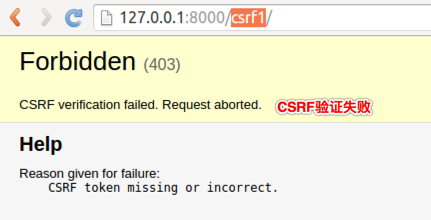
有csrftoken的模板代码
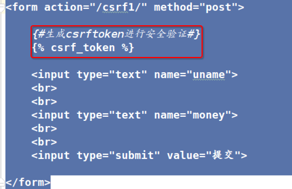
有csrftoken的网页源码
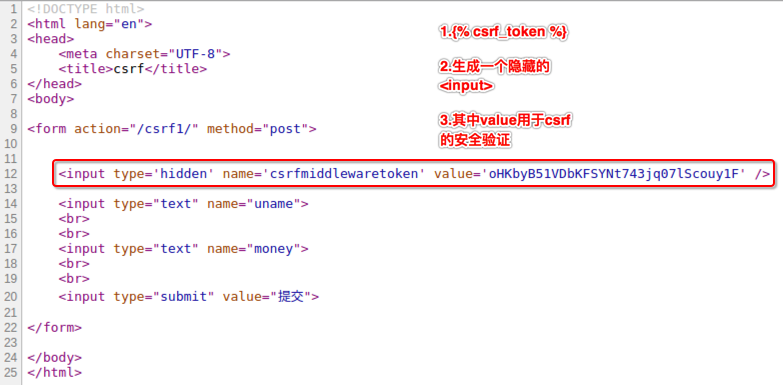
有csrftoken的表单提交
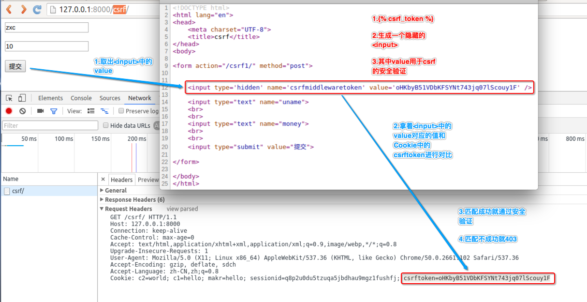
防止CSRF攻击原理示意图
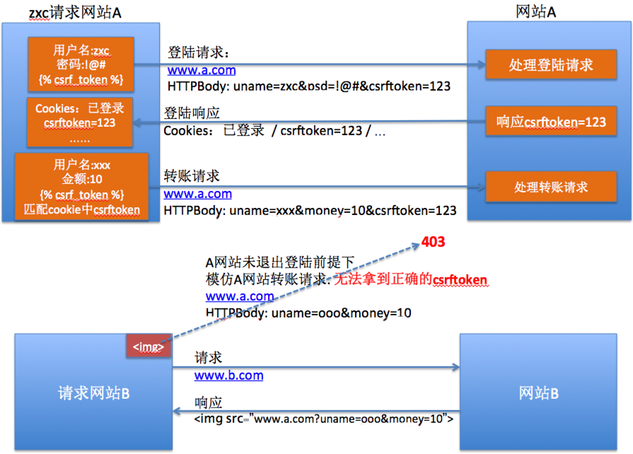
CSRF防护验证原理图
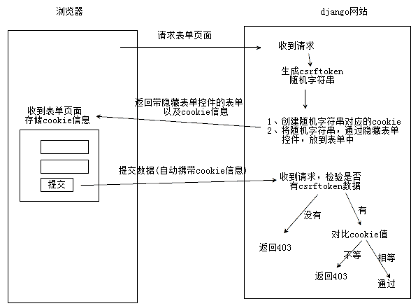
总结
1.当启用中间件并加入CSRF标签后，会向客户端浏览器中写入一条Cookie信息，这条Cookie信息的值与隐藏的input标签的value是一致的，提交到服务器时会先由csrf中间件进行验证，验证Cookie和和input的value是否一致，如果对比失败则返回403页面，而不会进行后续的处理
2.重要信息发送POST请求提交到服务器